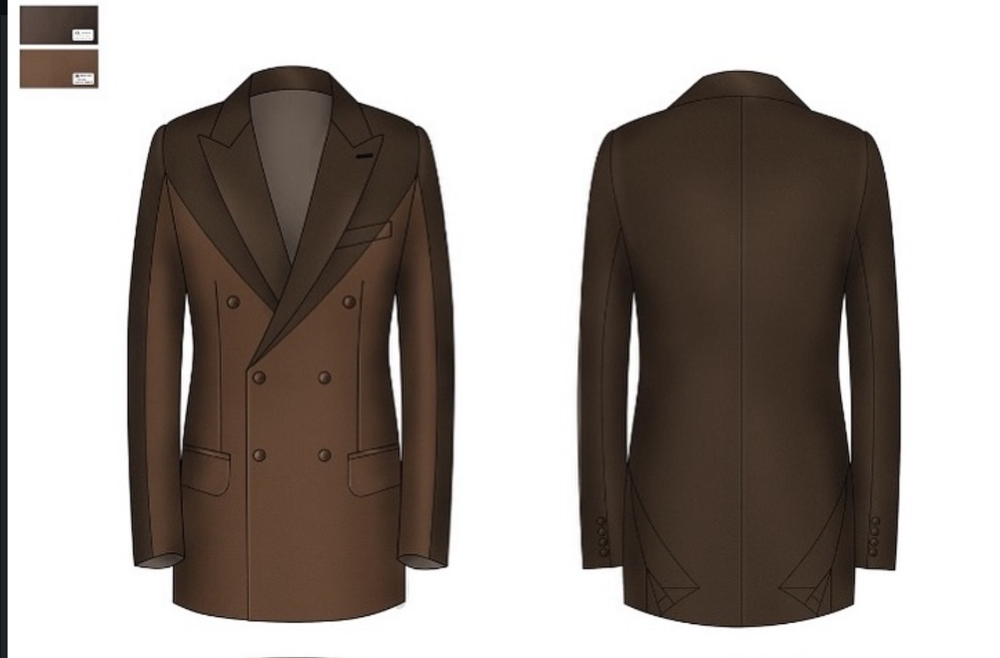

The Motaniel Journal
A journal shaped by tailoring, design, inspiration, and the quiet details that define Maison Motaniel.
Editorial Notes
The Motaniel Journal offers insight into craftsmanship, design direction, bespoke thinking, and the visual language that shapes the house.
A glimpse into the preparation, styling, and finishing details that shape a bespoke Maison Motaniel garment.

Explore how an idea develops into a refined piece through intention, structure, and careful design direction.
House Notes
Tailoring is approached as both structure and story, with each detail contributing to the final presence of the piece.
Every garment holds room for identity — from silhouette and fit to the signature elements hidden within.
Maison Motaniel values garments that feel considered, elevated, and memorable without losing their personal meaning.
Why The Journal Matters
The Motaniel Journal is not simply a collection of updates. It is an editorial space where the house shares the ideas, process, and visual language behind the garments.
Through this journal, visitors can understand not only what Maison Motaniel creates, but how the house thinks, designs, and gives meaning to tailoring.
Continue Exploring
Explore the House of Craft or begin your bespoke journey through consultation.